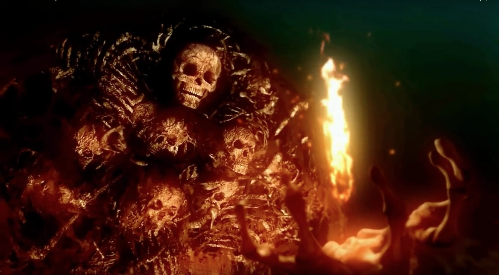
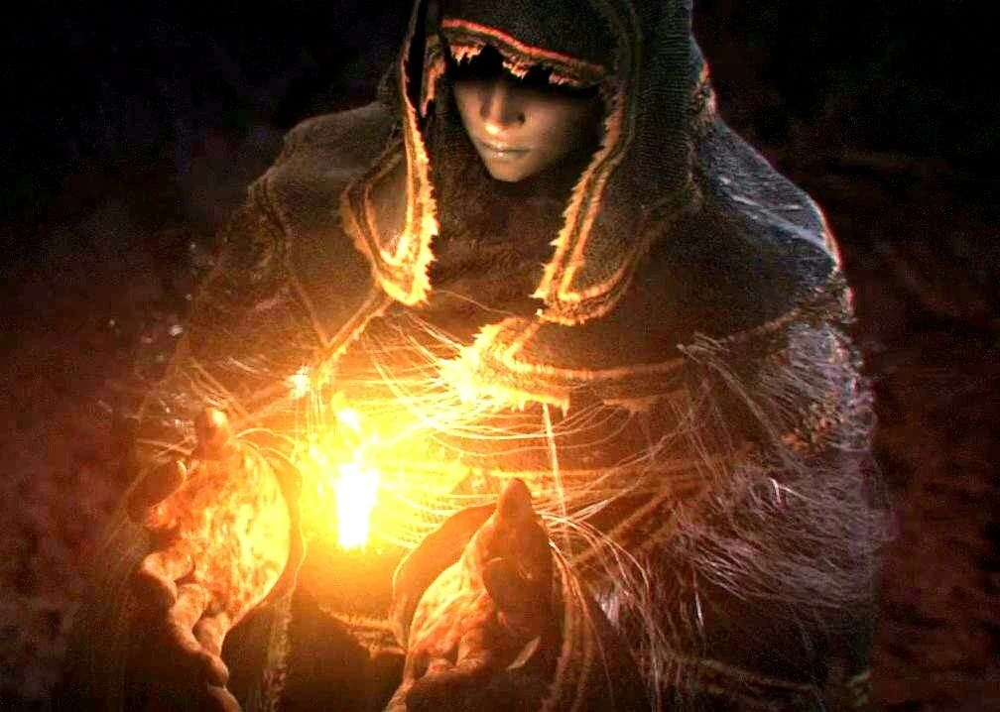
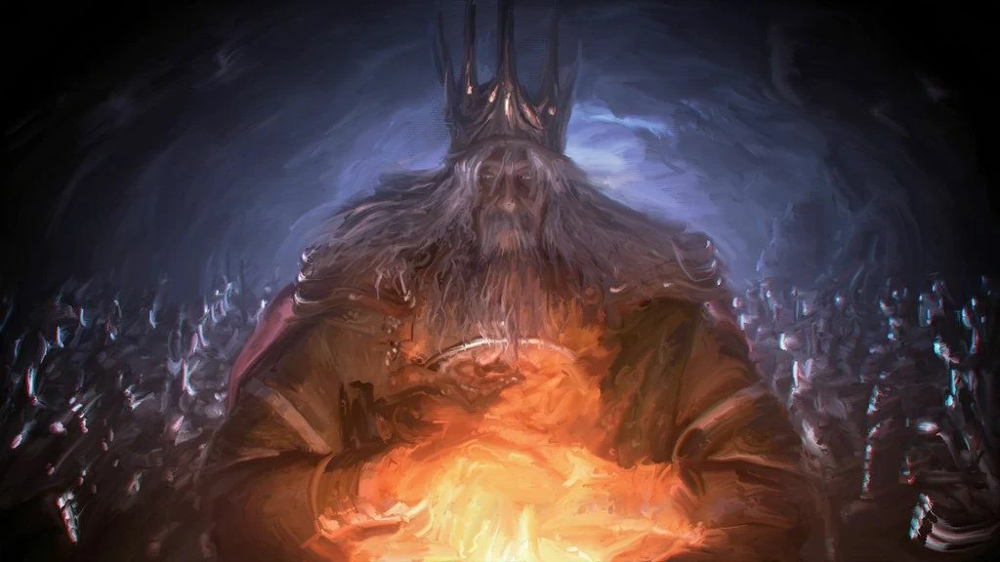

Introdução
O jogo Dark souls feito por Hidetaka Miyazaki mas produzido pela empresa Fromsoftware foi lançado em 22 de setembro de 2011, que é um sucesso até hoje, por conta de seu estilo único e por sua dificuldade, e seu jeito de contar sua história prncipal. O jogo ficou estremamente conhecido pelos pleyers justamente por ter uma dificuldade muito acima de outro jogos e não possuir nenhuma forma de alterar, a franquia criada por Miyazaki é conhecido globalmente apesar dos jogos serem um pouco antigos. Um pouco mais sobre Hidetaka Miyazaki
Hidetaka Miyazaki (宮崎 英高, Miyazaki Hidetaka, nascido por volta de 1974–1975) é um diretor de jogos eletrônicos japonês, projetista, escritor e executivo da FromSoftware. Ele...ver mais.
Dark Souls 1
No ínicio nada existia, apenas alguns seres como os antepassados dos gigantes e criatura de pedras que quase não eram vivas, porém seriam os futuros dragões do mendo. Mas então veio a primeira chama que deu o início dauelq mundo junto criando frio, calor, luz escuridão, vida e morte, com a primeira chama vieram também vieram seres estranhos, mas junto a ela estavam as três almas dos lordes. Sendo eles
- Nito primeiro dos mortos 
- A bruxa de Izalith 
- Gwin e Loid 
Os três lordes tomaram partes de chama para si, nito deu origem a morte, a bruxa compartilhou com suas filhas e gwin criou a raça dos deuses. Porém após surgiu uma alma chamada Dark soul tomada pelo pigmeu furtivo que no futuro daria forças a ela.
Após a tomada da chama os novos seres e os ja existentes entraram em conflito, Gwin usando seus poderes deu origem as primeiras magias, os outos dois lordes seguiram Gwin, a bruxa queimou as grandes arvores lugar onde os dragões viviam, nito fez com que a morte dos dragões fosse possivel apartir de certa força, e o pigmeu dividiu sua alma com seus lordes, e eles fizeram o mesmo, assim começando a humanidade, que criou guerreiros totalmente fieis aos deuses. Em meio a guerra Sif o dragão sem escamas, as escamas era o que tornava os dragões eternos, e ele por não possuir ele era mortal, então por medo ele traiu sua própria raça por temer a morte que nito comandava.
Após isso os dragões praticamente sumiram sendo quase extintos, mas com isso nasceu a era do fogo, com isso cada um dos três lordes foi para seu próprio reino, nito foi para a tumba dos gigantes onde apenas vigiaria, e faria pactos com humanos que espalhariam a morte. A bruxa voltou a Izalith junto a sua filhas, e assim criaram as primeiras piromancias, ja Gwin subiu ao topo de todos, estabelecendo um reino nas montanha de Anor Londor, ond eele e seus semelhantes se tonariam verdadeiros deuse, dividindo tudo isso em três partes, criando Lordran, Gwin batizou seu reinado como "a era do fogo" e nomeou Sif como duque e que ficou encaregado de cuidar da alma de lorde de Gwin, então Sif comoçou a busca pela imortalidade. O pigmeu por outro lado o pigmeu teve varios decendentes(a humanidade inteira), como mencionado antes os decendentes don pigmeu deveriam partilhar sua alma cocomo porta voz dessa religião seus decendentes, então todos os humanos posuiam uma parte de dark soul que é chamada de "humanidade", e tais hujmanos são vistos como seres com capacidade de terem poderes ilimitados.
Gwin com medo dos humanos criou uma religião com aa prermisa dde salvação, ele nomeou Lloyd como porta voz dessa religião, religião esa que era chamada de caminho branco para mais...
resumão
Após todos os acontecimentos desde a criação da chama e os lordes as tomarem para si, quaando Gwin se tornou deus e criou suaa religião, a chama começou a apagar, Gwin se sacrificou para deixar ela viva, mas não deu certo, então aí entra seu personagem, que tem como objetivo tocar os quatro sinos de lordan e tomar as quatro almas dos lordes, para dai sim ter a escolha de deixar ela acessa ou apaga-la.